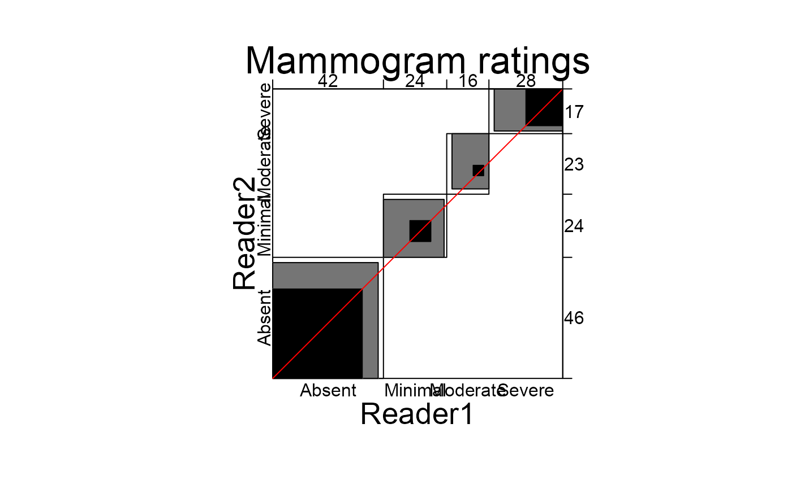
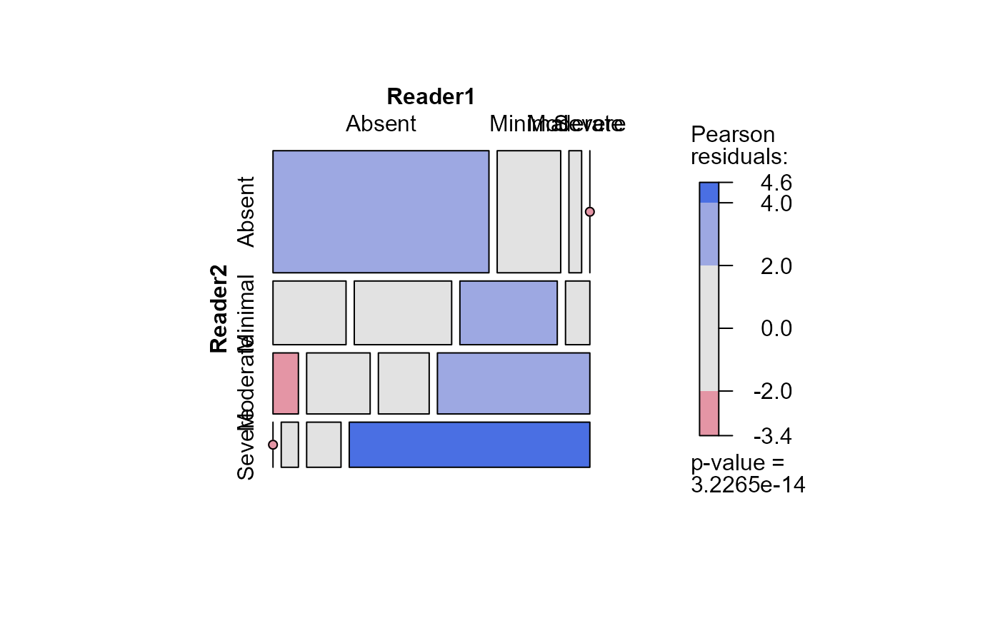
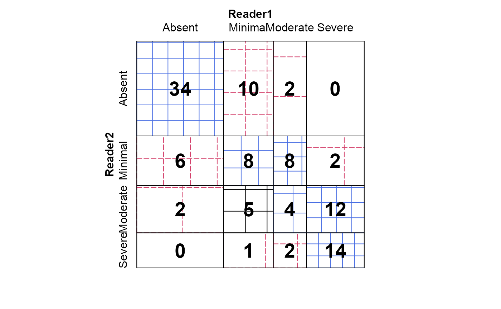

Mammogram Ratings
Mammograms.RdKundel & Polansky (2003) give (possibly contrived) data on a set of 110 mammograms rated by two readers.
Usage
data(Mammograms)Format
A frequency table in matrix form. The format is: num [1:4, 1:4] 34 6 2 0 10 8 5 1 2 8 ... - attr(*, "dimnames")=List of 2 ..$ Reader2: chr [1:4] "Absent" "Minimal" "Moderate" "Severe" ..$ Reader1: chr [1:4] "Absent" "Minimal" "Moderate" "Severe"
Source
Kundel, H. L. & Polansky, M. (2003), "Measurement of Observer Agreement", Radiology, 228, 303-308, Table A1
Examples
data(Mammograms)
B <- agreementplot(Mammograms, main="Mammogram ratings")

# agreement measures
B
#> $Bangdiwala
#> [,1]
#> [1,] 0.4272076
#>
#> $Bangdiwala_Weighted
#> [,1]
#> [1,] 0.8366481
#>
#> $weights
#> [1] 1.0000000 0.8888889
#>
Kappa(Mammograms)
#> value ASE z Pr(>|z|)
#> Unweighted 0.3713 0.06033 6.154 7.560e-10
#> Weighted 0.5964 0.04923 12.114 8.901e-34
## other displays
mosaic(Mammograms, shade=TRUE)

sieve(Mammograms, pop = FALSE, shade = TRUE)
labeling_cells(text = Mammograms,
gp_text = gpar(fontface = 2, cex=1.75))(as.table(Mammograms))
